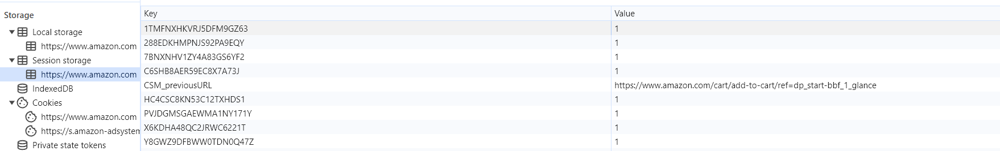
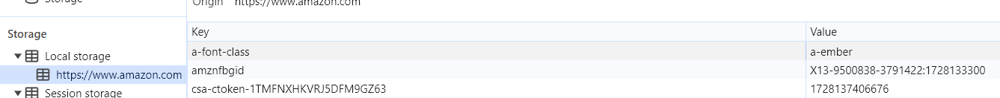

Plaats een product in je winkelwagen en kijk opnieuw bij local storage en cookies. Wordt de inhoud van je winkelwagen daar ergens bewaard? Zoniet, waar dan wel denk je?
Het wordt bewaard in zowel de local als session storage bij de kolom key met daarnaast de value (hoeveelheid) --> zie afbeelding
Hoe weten ze bij Amazon eigenlijk welke winkelwagen ? bij jou hoort
Bij de local storage zie je bij de kolom key staat er amznfbgid met daarnaast een value.
Deze value is jouw id en aan de hand daarvan weet Amazon welk winkelwagentje bij wie hoort --> zie afbeelding
